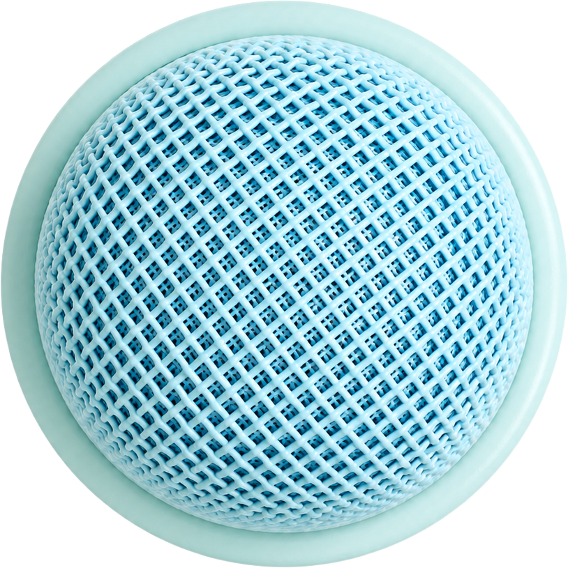

Rebuilt to match the saved Figma screen voice-listening.png 1:1 — real mint wash, the real mesh mic disc asset, the teal user bubble, soft concentric rings, and the + / explorer controls. This is the accurate baseline; redesign comes on top of it.

Source: docs/_session/voice-mode-listening-rebuild/screens/voice-listening.png · disc asset soundwave-sphere.png · tokens from palette.ts · font Nunito.